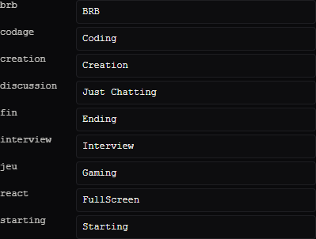

L'overlay a 9 scènes internes (discussion, codage, brb,
jeu, interview, react, creation, fin,
starting). Le relais (relay/server.js) écoute les changements de scène OBS
et doit traduire le nom exact de ta scène OBS vers l'identifiant interne correspondant.
Si tu renommes une scène dans OBS, ou si tes noms ne correspondent pas à ceux utilisés par défaut, le relais ne saura plus faire le lien : la scène s'affiche dans OBS mais l'overlay ne change pas.
Le relais logue toujours un avertissement clair quand une scène OBS lui est inconnue :
[relay] scène OBS "Nom Que Tu As Utilisé" absente de la table de correspondance — ignoréeSi tu vois ce message dans le terminal de start-stream.bat/start-dev.bat,
c'est le signal qu'il faut mettre à jour le mapping.
bun dev/start-dev.js (jamais pendant un live).dev/overlay-setting.html, section OBS → sous-section
« Renommer les scènes OBS ».relay/obs-scene-map-data.js.relay/server.js — le fichier est importé une seule fois
au démarrage, pas de rechargement à chaud.
brb, codage, discussion...),
champ texte pour le nom OBS exact.OBS WebSocket ne pousse pas d'événement « cette scène a été renommée, voici l'ancien et le nouveau nom » que le relais pourrait exploiter pour se mettre à jour tout seul de façon fiable — et même s'il le faisait, laisser un process modifier silencieusement son propre fichier de config en plein live serait plus risqué que rassurant. Le panneau est le compromis retenu : zéro édition de code à la main, un clic pour sauvegarder, mais une action explicite de ta part.
relay/obs-scene-map-data.js est un objet JS trivial :
export const OBS_SCENE_MAP = {
'Nom Exact Dans OBS': 'discussion',
// ...
};Si tu crées une scène OBS pour un usage qui n'a pas encore de scène overlay correspondante, il faut d'abord créer la scène overlay elle-même (panneau → « + scène », voir utiliser-le-panneau.html) avant de pouvoir la mapper ici.